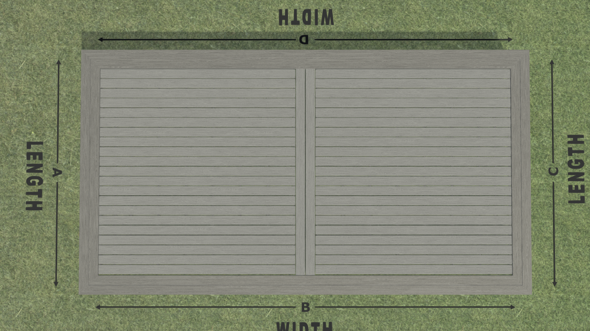

Pool Deck Framing Plan & Cut List — v11.4
📐 Design Summary
One continuous frame: 22' wide × 12' deep · Doubled 2×6 rims on all four sides · Joists run front-to-back, 11.5' length · Zero joist cuts · ~17 joists at 16" O.C.
Simple border: Single-row picture-frame border on all edges · 45° mitered corners · NO center seam · NO complicated blocking
Total footprint: 22' × 12' · Pedestals: ~55–65 total · No ledger, no center break
012×6 Framing Plan
One continuous 22' × 12' rectangle. Joists run front-to-back at 11.5' length — no cuts. Doubled 2×6 rims on all four sides. Simple.
Joist Layout Diagram (One Continuous 22'×12' Frame — Looking Down)

Full Cut List — 2×6 Lumber (One Frame)
All four rim joists are doubled 2×6 (two boards face-screwed together). This makes the frame beefier and gives the border something solid to anchor to.
| Piece | Qty | Cut From | Length | Offcut / Notes |
|---|---|---|---|---|
| Back Rim Joist (doubled) | 2 boards | 2×6 × ~22' | ~22' each | Continuous — no splice · May need 2×12' or 2×14' spliced if 22' not available |
| Front Rim Joist (doubled) | 2 boards | 2×6 × ~22' | ~22' each | Continuous — no splice |
| Left Side Rim (doubled) | 2 boards | 2×6 × ~12' | ~12' each | Cut from 14' stock if needed |
| Right Side Rim (doubled) | 2 boards | 2×6 × ~12' | ~12' each | Cut from 14' stock if needed |
| Field Joists | ~17 | 2×6 × 11'6" | 11.5' (full) | None — zero cuts! |
| Mid-Span Blocking | ~16 | 2×6 offcuts/scrap | ~14–18" each | One per bay across 22' width |
All field joists use full stock length. The 11.5' joists need no cuts. Only the side rims need cutting if using 14' stock. The back/front rims are continuous ~22'.
22' = 264". At 16" O.C. with rim on both sides: joists at 0, 16, 32, 48, 64, 80, 96, 112, 128, 144, 160, 176, 192, 208, 224, 240, 256, and rim at 264". That's ~17 field joists + doubled rims on left and right. Clean, simple numbers.
Blocking Plan
Mid-Span Blocking
One row of 2×6 blocking at ~5.75' from back edge. Prevents the 11.5' joists from twisting and adds stiffness across the full 22' width.
- ~16 pieces (one per bay between field joists)
- ~14–18" long (bay width minus 1.5" joist width)
- Cut from 2×6 offcuts or scrap
- Face-screw to joists with 2.5" exterior screws
NO Border Blocking Needed
With a single-row picture-frame border (5.5" deep), border boards sit directly on the doubled rim joists. The rim itself provides solid support — no extra blocking required underneath the border zone.
- Back/front borders: Full ~12' boards (or spliced) run front-to-back · Screwed into doubled rim AND into field board ends · Plenty of support
- Side borders: ~10' 6" boards run left→right · Screwed into doubled side rim AND into field board ends · Supported by rim itself
- Result: No extra blocking pieces needed under borders · The doubled rim does the work
025/4×6 Decking Layout — Picture-Frame Border
Field boards run left→right. Border boards run perpendicular. 45° mitered corners. Simple, clean, classic.
Decking Plan (One Frame, Single-Row Border)
Reference: Trex design tool 3D perspective view

Decking Cut List
| Component | Boards Needed | Cut Length | Notes |
|---|---|---|---|
| Inner Field (full width) | ~36 boards | ~10' 6" (from 12' stock) | ~1' 6" offcut becomes border stock |
| Back Border (full 22') | ~4 boards | ~12' each (front-to-back) | Full boards run front-to-back along back edge · Mitered at corners |
| Front Border (full 22') | ~4 boards | ~12' each (front-to-back) | Full boards run front-to-back along front edge · Mitered at corners |
| Left Border | ~2 boards | ~10' 6" each (left→right) | Cut from 12' stock · Mitered at corners |
| Right Border | ~2 boards | ~10' 6" each (left→right) | Cut from 12' stock · Mitered at corners |
| TOTAL field boards | ~36 | — | Cut from ~36 full 12' boards |
| TOTAL border boards | ~12 | — | Full boards (not short pieces) · Simpler and stronger |
Inner field depth is ~10' 6" = 126". Each 5/4×6 board is ~5.5" wide + ¼" gap = 5.75" effective. 126" ÷ 5.75" = ~21.9 rows. Adjust gap slightly (⅛"–¼") to land clean without ripping the last board. Border is one row of 5.5" boards.
Instead of cutting hundreds of short ~11" border pieces, use full-length boards for the border. A 12' board running front-to-back along the back edge is stronger, faster to install, and looks cleaner than a dozen short butted pieces. Miter the corners where full boards meet.
Border Corner Details (45° Miters)
03Pedestal Placement Plan
~55–65 pedestals total. You have 38 on hand (mix of ECO M and L). Need to buy ~20–25 more.
| Location | Pedestals | Model | Approx Height |
|---|---|---|---|
| Field joists (×~17) | 2–3 per joist = ~40 | ECO M (1.4"–2.6") | ~0.5"–1" (low, just leveling) |
| Rim joists + corners | ~12 | ECO L (2.6"–5.1") or M | ~1"–2" (corners may need more lift) |
| Blocking points | ~6 | ECO M | ~0.5"–1" |
| GRAND TOTAL | ~55–65 | — | 38 on hand → need ~20–25 more |
For 2×6 joists at ~11.5' span, use 2–3 pedestals per field joist (one near each end, one mid-span if needed) plus extras under rim. The 11.5' span is fine with 2–3 supports for foot traffic.
04Summary: Build Day Cut Order
Stain everything first, then cut. Here's the order:
- Back/front rims: Source four ~22' 2×6s (2 back + 2 front, doubled). If 22' stock unavailable, splice two ~12' boards with 2' overlap and structural screws.
- Side rims: Cut four ~12' 2×6s (2 left + 2 right, doubled). If using 14' stock, cut to ~12'.
- Field joists: Use ~17 11'6" 2×6s at full length. NO cuts needed!
- Mid-span blocking: From offcut pile, cut ~16 pieces: ~14–18" each.
- Field decking: Set aside ~36 full 12' boards. Cut each to ~10' 6". Save ~1' 6" offcuts for border stock if needed.
- Border decking: Use full 12' boards for back/front borders (running front-to-back). Cut ~10' 6" pieces for side borders from extra 12' boards. Miter all four corners at 45°.
All cuts get stain on the fresh end grain BEFORE assembly. End grain drinks stain — hit it twice.
📊 Stock Check
2×6 (11'6") used: ~17 pieces for joists + 4 pieces for side rims = ~21 total. Check your stock.
2×6 (~22') used: 4 boards (2 back + 2 front, doubled). May need to splice shorter stock.
5/4×6 decking used: ~48–50 of ~54 boards → comfortable margin.
Pedestals: ~55–65 needed, 38 on hand → buy ~20–25 more (recommend ECO M).